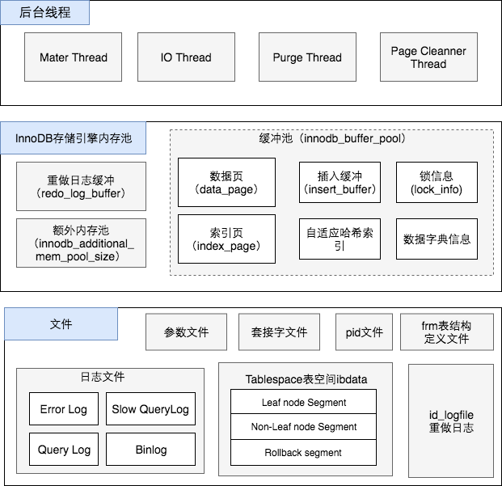

写在前面
 从上图（Mysq InnoDB存储引擎架构图）我们可以看到比较核心的一块就是InnoDB存储引擎内存池。缓冲池的设计目的是为了协调CPU速度和磁盘速度的鸿沟。页的操作首先是再缓冲池中完成的。
如果一条DML语句，如Update或Delete改变了页中的记录，那么此时页是脏的,即缓冲池中页的版本要比磁盘的新。数据库需要将新的版本刷新到磁盘。
如果每次页发生变化，就将也的版本刷新到磁盘，那么这个开销是非常大的，缓冲池也就没有意义了。如果热点数据集中在某几个页中，那么数据库性能将会变的非常差。
如果缓冲池的新版本刷新到磁盘前发生了宕机，那么数据就不能恢复，为了避免数据丢失问题，当前十五数据库系统普遍采用了Write Ahead Log策略，即当事务提交时，先写重做日志，再修改页。通过重做日志来完成数据恢复。这也是事务ACID中D（Durablity持久性）的要求。
我们设想一下以下场景： 1）缓存池不够用，根据LRU算法，会溢出最近最少使用的页，如果此页正好是脏页，如果没有机制来将缓存池中的脏页数据刷新到磁盘，那么数据就会丢失。 2）重做日志的设计并不是无限增大的，都是循环使用的。那么假设重做日志被覆盖使用的时候，缓存池的数据还没有刷新到磁盘，这个时候数据库宕机，那么数据就会丢失，没办法恢复。 3）数据库运行很长时间，突然发生宕机，数据库应用重做日志需要非常久，恢复代价也会非常大
Checkpoint
Checkpoint（检查点）技术也主要是解决这些问题
- 缩短数据库恢复的时间；
- 缓冲池不够用的时候，将脏页刷新到磁盘；
- 重做日志被覆盖的时候，将缓存的脏页刷新到磁盘。
LSN（Log Sequnce Number）
InnoDB存储引擎是通过LSN（Log Sequnce Number）来标记版本的。LSN是8个字节的整形，每个页有LSN（重做日志有LSN，Checkpoint也有LSN）。以下命令观察LSN
|
|
|
|
Checkpoint的分类
- Sharp Checkpoint
- Fuzzy Checkpoint
Sharp Checkpoint发生在数据库关闭所有的脏也都刷新回磁盘。这是默认的工作方式，即参数innodb_fast_shutdown=1
如果数据库在运行过程中使用Sharp Checkpoint，数据库的可用性就会受到很大的影响。 故，在InnoDB存储引擎内部使用Fuzzy Checkpoint进行页的刷新，即只刷新一部分脏页。
Fuzzy Checkpoint的场景
- Master Thread Checkpoint
- FLUSH_LRU_LIST_Checkpoint
- Async/Aync Flush Checkpoint
- Dirty Page too mush Checkpoint
Master Thread Checkpoint
Master Thread定期将缓存池中的脏页列表中刷新一定比例的脏页到磁盘。这个过程是异步的，不会阻塞用户查询线程。
FLUSH_LRU_LIST_Checkpoint
InnoDB存储引擎需要保证LRU列表中有差不多100多个空闲页可用。
1）在InnoDB 1.1.X版本之前，用户查询县城回检查是否有足够的空间可用，这个会阻塞查询线程，如果没有100个可用空闲页，那么InnoDB存储引擎会将LRU列表尾端的页移除。如果这些页中有脏页，那么需要进行Checkpoint技术，而这些页是来自LRU列表，因此称为FLUSH_LRU_Checkpoint.
2)InnoDB 1.2.X版本开始，这个检查放在一个单独的线程，也就是Page Cleaner Thread，并且用户可以通过参数innodb_lru_scan_depth控制LRU列表中可用页的数量。该值默认是1024，如：
|
|
Async/Sync Flush Checkpoint
Async/Sync Flush Checkpoint指的是重做日志文件不可用的情况，需要强制刷新脏页到磁盘，保证重做日志的可用性。重做日志不可用的场景，其实就是重做日志循环使用被覆盖的情况，重做日志设置的太小或者段时间产生了大量的重做日志。
redo_lsn:重做日志的lsn
checkpoint_lsn:已经刷新到磁盘的lsn
定义：
checkpoint_age = redo_lsn - checkpoint_lsn
async_water_mark = 75% total_redo_log_file_size
aync_water_mark = 90% total_redo_log_file_size
那么可以分为以下情况：
- 1）当checkpoint_age<async_water_mark时，不需要将脏页刷新到磁盘；
- 2）当async_water_mark<checkpoint_age<sync_water_mark时，Async Flush；
- 3）当checkpoint_age>sync_water_mark时，Sync Flush，这种情况一般很少发生，除非重做日志设置的太小。
[注] InnoDB 1.2.X版本之前，Async/Sync Flush会阻塞所有发现问题的线程，而Sync Flush则会阻塞所有的查询线程。
InnoDB 1.2.X版本开始，这部分刷新操作放到了Page Cleaner Thread中故不会阻塞查询线程。
Dirty Page too much
脏页数量太多，导致InnoDB存储引擎强制进行Checkpoint，保证缓冲池中有足够的可用的页。
|
|
innodb_max_dirty_pages_pct=90表示脏页数量占用90%的时候强制刷新一部分脏页到磁盘，InnoDB 1.2.X默认值是75